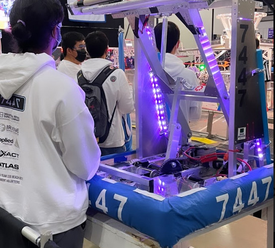
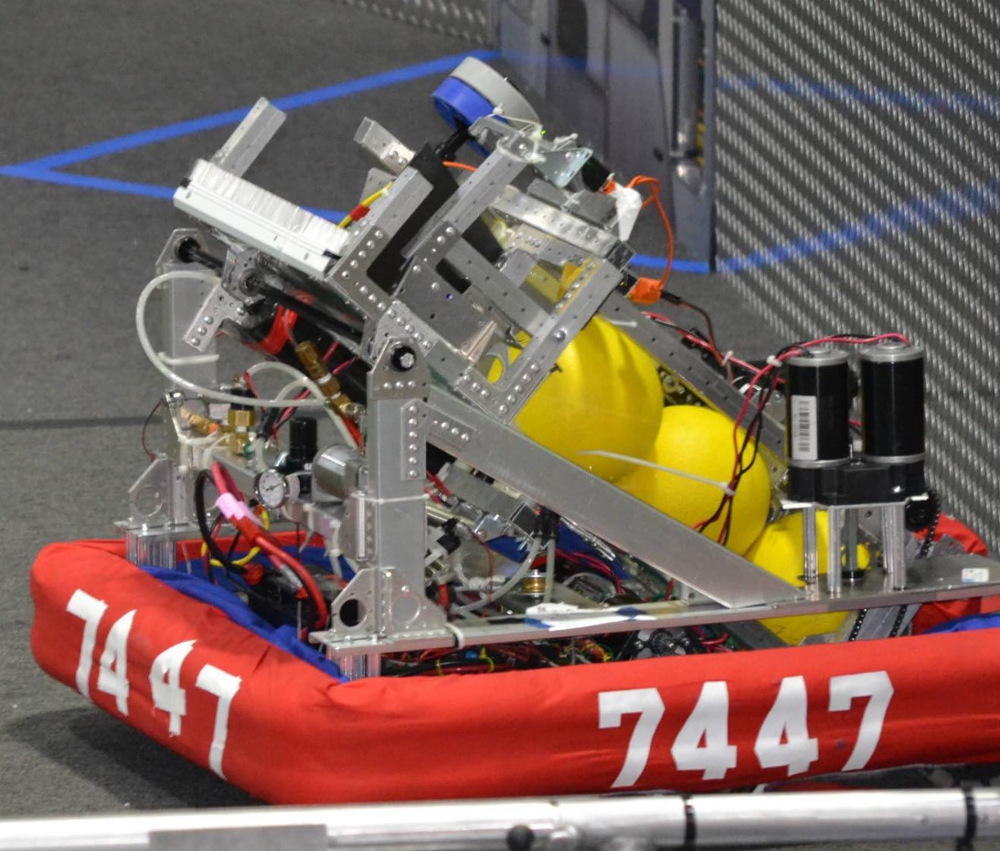

Rōnin Robotics
|

|
| 2022 Competition |
|

|
| Our 2020 Bot |
|---|
Rōnin Robotics was founded in 2018 by a band of students at Portola High with a vision of exploring the STEM field. Now, the team is expanding with new members and huge ambitions. Team 7447 aims for students to gain as much experience and knowledge while having fun. Inspiring newfound passions in STEM with enthusiasm and determination, but more than that, we learn valuable lessons in group work and team connections. We hope to become the next generation of successful leaders!